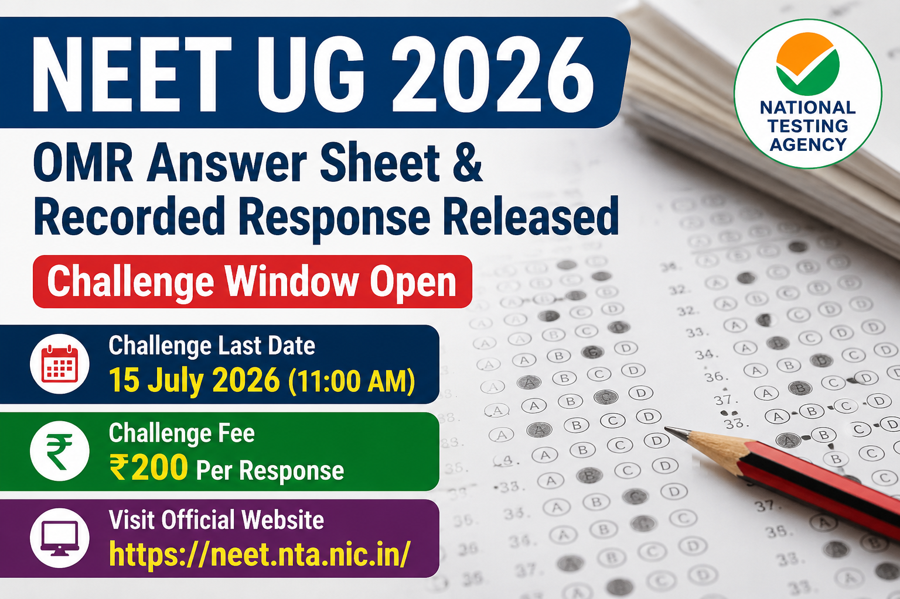

National Testing Agency (NTA) ने NEET UG 2026 Re-Exam में शामिल उम्मीदवारों के लिए Scanned OMR Answer Sheet और Recorded Responses जारी कर दिए हैं। उम्मीदवार अब अपने OMR रिकॉर्ड को ऑनलाइन देख सकते हैं तथा यदि किसी उत्तर में आपत्ति हो तो निर्धारित समय सीमा के भीतर ऑनलाइन Challenge भी दर्ज कर सकते हैं।
National Testing Agency (NTA) ने NEET UG 2026 Re-Exam से संबंधित एक महत्वपूर्ण अपडेट जारी किया है। जिन उम्मीदवारों ने पुनः परीक्षा में भाग लिया था, वे अब आधिकारिक वेबसाइट पर जाकर अपनी Scanned OMR Answer Sheet और Recorded Responses देख सकते हैं।
यदि किसी उम्मीदवार को लगता है कि OMR Sheet में दर्ज उत्तर और उसके द्वारा भरे गए उत्तरों में अंतर है, तो वह निर्धारित प्रक्रिया के अनुसार ऑनलाइन Challenge दर्ज कर सकता है। प्रत्येक Challenge के लिए निर्धारित शुल्क का भुगतान करना अनिवार्य होगा।
| विवरण | जानकारी |
|---|---|
| Exam | NEET UG 2026 Re-Exam |
| Conducting Agency | National Testing Agency (NTA) |
| OMR Answer Sheet Released | 13 July 2026 |
| Challenge Start | 13 July 2026 |
| Last Date | 15 July 2026 (11:00 AM) |
| Challenge Fee | ₹200 Per Response |
NTA ने उम्मीदवारों को पारदर्शिता प्रदान करने के उद्देश्य से उनकी Scanned OMR Answer Sheet और Recorded Responses उपलब्ध कराए हैं। इससे उम्मीदवार अपने द्वारा भरे गए उत्तरों का मिलान कर सकते हैं और यदि कोई त्रुटि दिखाई देती है तो निर्धारित समय सीमा के भीतर ऑनलाइन Challenge दर्ज कर सकते हैं।
NTA द्वारा निर्धारित नियमों के अनुसार प्रत्येक उत्तर (Response) को Challenge करने के लिए ₹200 (Non-Refundable) शुल्क देना होगा। बिना शुल्क जमा किए गए Challenge स्वीकार नहीं किए जाएंगे।
NEET UG 2026 Scanned OMR Answer Sheet एवं Recorded Responses देखने के लिए नीचे दिए गए आधिकारिक लिंक का उपयोग करें।
NTA द्वारा OMR Answer Sheet और Recorded Responses जारी किए जाने के बाद अब उम्मीदवार अपने उत्तरों का मिलान कर सकते हैं। यदि किसी उत्तर में त्रुटि दिखाई देती है तो निर्धारित समय सीमा के भीतर ऑनलाइन Challenge दर्ज किया जा सकता है। अंतिम तिथि के बाद किसी भी प्रकार का अनुरोध स्वीकार नहीं किया जाएगा।
यदि आपने NEET UG 2026 Re-Exam दिया है तो सबसे पहले अपनी Scanned OMR Answer Sheet और Recorded Responses डाउनलोड करके ध्यानपूर्वक जांचें। यदि किसी प्रश्न में त्रुटि दिखाई देती है तो समय रहते ऑनलाइन Challenge दर्ज करें।
Education Update Hub पर NEET UG 2026 से संबंधित Answer Key, Result, Counselling तथा अन्य सभी महत्वपूर्ण अपडेट समय-समय पर प्रकाशित किए जाएंगे।
National Testing Agency (NTA) ने NEET UG 2026 Re-Exam में शामिल उम्मीदवारों के लिए Scanned OMR Answer Sheet और Recorded Responses 13 जुलाई 2026 को जारी किए हैं।
उम्मीदवार 15 जुलाई 2026 सुबह 11:00 बजे तक अपने Recorded Responses को ऑनलाइन Challenge कर सकते हैं।
प्रत्येक उत्तर (Response) को Challenge करने के लिए ₹200 (Non-Refundable) शुल्क निर्धारित किया गया है।
उम्मीदवार आधिकारिक वेबसाइट पर Login करके Scanned OMR Answer Sheet एवं Recorded Responses देख सकते हैं और यदि आवश्यक हो तो ऑनलाइन Challenge दर्ज कर सकते हैं।
नहीं। NTA द्वारा निर्धारित ₹200 प्रति Response शुल्क Non-Refundable है।
नहीं। केवल ऑनलाइन माध्यम से निर्धारित समय सीमा के भीतर भेजे गए Challenge ही स्वीकार किए जाएंगे।
हाँ। Login के दौरान Two-Factor Authentication (OTP Verification) पूरा करना अनिवार्य है।
उम्मीदवार NEET UG की आधिकारिक वेबसाइट https://neet.nta.nic.in पर जाकर OMR Answer Sheet एवं Recorded Responses देख सकते हैं।
नहीं। अंतिम तिथि और समय समाप्त होने के बाद किसी भी प्रकार का Challenge स्वीकार नहीं किया जाएगा।
NEET UG 2026 से संबंधित OMR Answer Sheet, Answer Key, Result, Counselling और अन्य सभी महत्वपूर्ण अपडेट Education Update Hub तथा NTA की आधिकारिक वेबसाइट पर उपलब्ध कराए जाएंगे।
अधिक जानकारी के लिए उम्मीदवार NEET UG की आधिकारिक वेबसाइट पर जाएं।